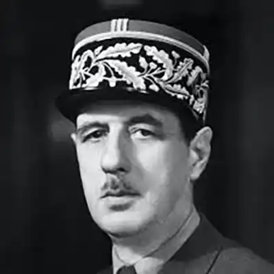
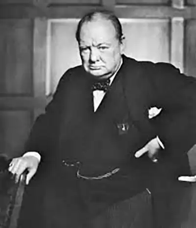
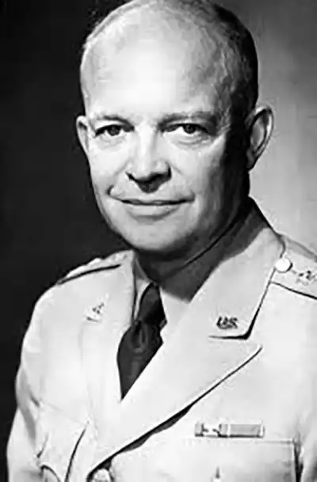
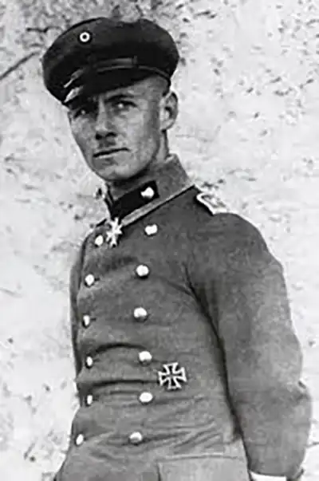
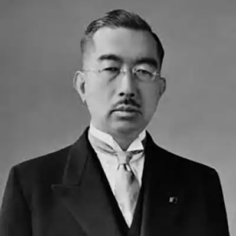
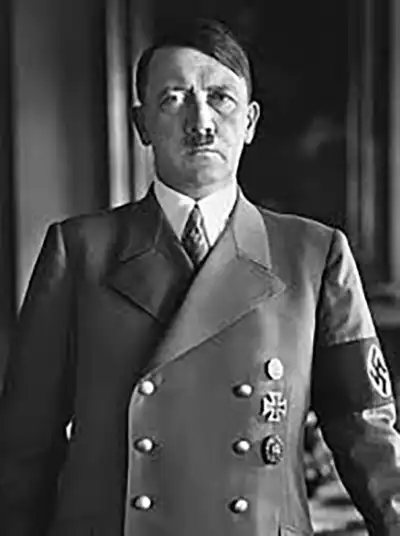
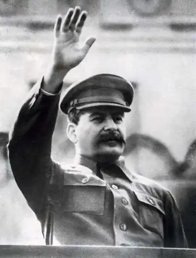
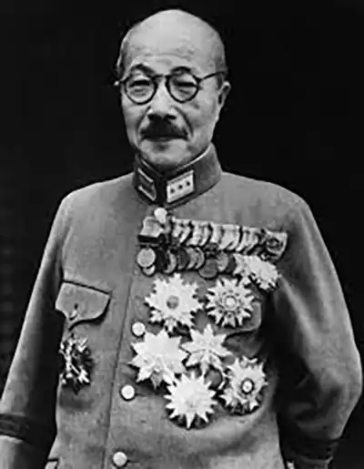
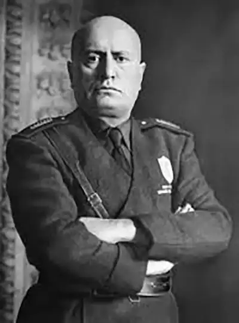

Photos
Why United States joined WW2
Who Were the Leaders of WW2?
Photo Gallery
Schedule a Visit

Charles de Gaulle

Winston Churchill

Dwight D. Eisenhower

Erwin Rommel

Emperor Hirohito

Adolf Hitler

Joseph Stalin

Hideki Tojo

Benito Mussolini